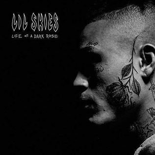

Lil Skies – Glas mladalačke iskrenosti
O umetniku
Lil Skies mi je umetnik koji je znao da kaže ono što sam osećao, čak i onda kada ja to nisam umeo da izrazim. Njegova muzika je sirova, lična i emotivno iskrena – i upravo zbog toga, postala je deo mog svakodnevnog života. Kad god bih prolazio kroz haos misli, pesme poput „Nowadays“, „Red Roses“ ili „Lust“ davale su mi osećaj da nisam sam u toj borbi.
Ono što me najviše privuklo kod Skiesa jeste njegov stil – jednostavan, ali dubok, melodičan ali i pun tuge. On ne pokušava da bude neko drugi, ne skriva ko je. Njegova autentičnost, način na koji priča o svom putu, svojim greškama, svojim emocijama, to je ono što me podseća da je u redu biti ranjiv i ne savršen.
Skies me naučio da je snaga upravo u iskrenosti. Da nije slabost reći da si umoran, da te boli, da ne znaš kuda ideš – jer svi to prolazimo, ali malo ko o tome priča glasno kao on. I upravo u toj tišini, dok slušam njegove stihove, osećam se kao da imam nekoga ko me razume i ne osuđuje.
Za mene je Lil Skies simbol mladalačke borbe – onaj unutrašnji haos koji većina skriva, ali koji on pretvara u umetnost. I možda nikada neću moći da mu to kažem, ali njegova muzika mi je pomogla da razumem sebe, da prihvatim sve svoje nesavršenosti i da nastavim dalje – bez obzira na sve.
Najpoznatiji albumi
- Life of a Dark Rose (2018) – Debi mixtape koji je doneo autentične priče o mladalačkim usponima i padovima, sa hitovima „Nowadays“, „Red Roses“ i „Lust“.
Nasleđe
Lil Skies je glas generacije koja traži iskrenost i autentičnost u modernom hip-hopu. Njegova sposobnost da spoji melodične refrene sa sirovim, ličnim tekstovima omogućila mu je da se poveže sa publikom širom sveta, ostavljajući trag u žanru i inspirišući mnoge mlade umetnike.
Njegova muzika nije samo zabava – to je iskreni pogled u unutrašnji svet mladih, sa svim njihovim borbama, nadama i nesigurnostima. Lil Skies je postao simbol mladalačke ranjivosti i snage kroz umetnost.